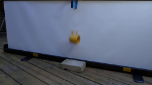
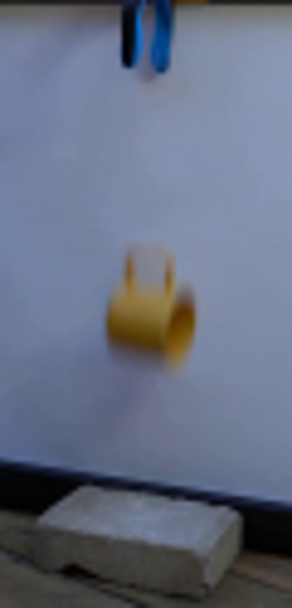
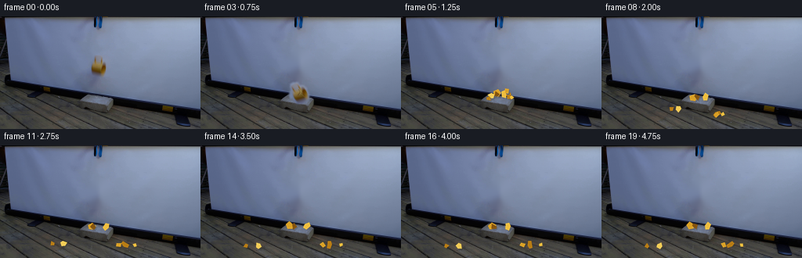
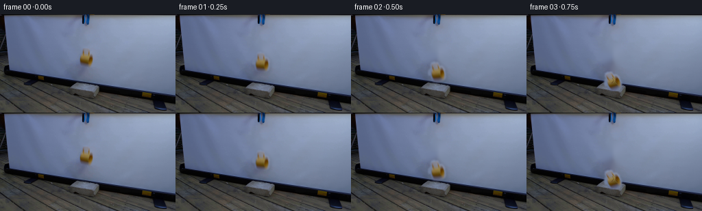

CODING AGENTS AS PIXEL WORLD MODELS
traex/GPT-5.6-Sol · 0126
点击播放 · 原生 RGB 像素
逐轮保存的候选
回放视频、检查图与代码变化。
每份候选均可单独播放。实际图片检查记录在下方工具轨迹中。
候选 01播放与检查图
点击播放 · 原生 RGB 像素

展开代码变化
--- 上一保存版本
+++ 本次保存版本
@@ -0,0 +1,181 @@
+from pathlib import Path
+import numpy as np
+import cv2
+from PIL import Image, ImageDraw
+import artifact_io
+
+ROOT = Path(__file__).resolve().parent
+W,H = 256,144
+im = np.array(Image.open(ROOT/'first_frame.png').convert('RGB'))
+
+# Remove the airborne cup from the locked camera plate. Telea inpainting follows the
+# very smooth, slightly mottled projection-screen illumination convincingly.
+plate = im.copy()
+mask = np.zeros((H,W), np.uint8)
+cv2.ellipse(mask, (126,62), (16,21), 0, 0, 360, 255, -1)
+# keep the repair entirely above the brick
+mask[82:] = 0
+plate = cv2.inpaint(cv2.cvtColor(plate,cv2.COLOR_RGB2BGR), mask, 5, cv2.INPAINT_TELEA)
+plate = cv2.cvtColor(plate,cv2.COLOR_BGR2RGB)
+# suppress inpaint micro-ringing, but only within the repaired patch
+soft = cv2.GaussianBlur(plate,(0,0),1.2)
+plate[mask>0] = soft[mask>0]
+
+# Isolate the actual photographed mug, including the dark mouth and motion-soft edge.
+# The silhouette is a sideways cup: bowl and the two arms of its handle.
+yy,xx=np.mgrid[0:H,0:W]
+shape = (((xx-126)/13.5)**2 + ((yy-63)/13.8)**2 < 1)
+# include the upright/upper handle region but exclude distant screen
+shape |= (((xx-126)/8.5)**2 + ((yy-52)/11.0)**2 < 1)
+diff = np.max(np.abs(im.astype(np.int16)-plate.astype(np.int16)),axis=2)
+hsv = cv2.cvtColor(im,cv2.COLOR_RGB2HSV)
+yellow = ((hsv[:,:,0] > 7) & (hsv[:,:,0] < 40) & (hsv[:,:,1] > 40))
+raw = ((diff>5) | yellow) & shape
+raw = cv2.morphologyEx(raw.astype(np.uint8)*255, cv2.MORPH_CLOSE, np.ones((5,5),np.uint8))
+raw = cv2.dilate(raw,np.ones((3,3),np.uint8),iterations=1)
+alpha0 = cv2.GaussianBlur(raw,(0,0),1.0).astype(np.float32)/255.0
+# photoreal object pixels from frame zero
+mug_rgb = im.copy().astype(np.float32)
+
+
+def affine_layer(rgb, alpha, center, angle, dx, dy, scale=1.0, blur_motion=0.0):
+ """Rotate/translate the photographed object on full-frame transparent layers."""
+ M=cv2.getRotationMatrix2D(center, angle, scale)
+ M[:,2] += (dx,dy)
+ a=cv2.warpAffine(alpha,M,(W,H),flags=cv2.INTER_LINEAR,borderValue=0)
+ r=cv2.warpAffine(rgb,M,(W,H),flags=cv2.INTER_LINEAR,borderMode=cv2.BORDER_REFLECT)
+ if blur_motion>0:
+ # short vertical exposure trail, appropriate for fixed camera / falling cup
+ acca=np.zeros_like(a); accr=np.zeros_like(r); ws=0
+ for off,w in [(-blur_motion,.18),(0,.64),(blur_motion,.18)]:
+ MM=np.float32([[1,0,0],[0,1,off]])
+ aa=cv2.warpAffine(a,MM,(W,H),flags=cv2.INTER_LINEAR,borderValue=0)
+ rr=cv2.warpAffine(r,MM,(W,H),flags=cv2.INTER_LINEAR,borderMode=cv2.BORDER_REFLECT)
+ acca += aa*w; accr += rr*w; ws+=w
+ a=acca/ws; r=accr/ws
+ return r,a
+
+def composite(base, rgb, a):
+ aa=np.clip(a,0,1)[...,None]
+ return np.clip(base.astype(np.float32)*(1-aa)+rgb.astype(np.float32)*aa,0,255).astype(np.uint8)
+
+# Supersampled vector overlay for impact cracks, fragments, dust and minute shadows.
+S=4
+def overlay_shapes(frame, polys=(), ellipses=(), lines=()):
+ lay=Image.new('RGBA',(W*S,H*S),(0,0,0,0)); d=ImageDraw.Draw(lay,'RGBA')
+ for box,fill in ellipses:
+ d.ellipse(tuple(int(v*S) for v in box),fill=fill)
+ for pts,fill in polys:
+ d.polygon([(int(x*S),int(y*S)) for x,y in pts],fill=fill)
+ for pts,fill,width in lines:
+ d.line([(int(x*S),int(y*S)) for x,y in pts],fill=fill,width=max(1,int(width*S)),joint='curve')
+ lay=lay.resize((W,H),Image.Resampling.LANCZOS)
+ out=Image.alpha_composite(Image.fromarray(frame).convert('RGBA'),lay).convert('RGB')
+ return np.array(out)
+
+# fragment definitions: (polygon around origin, fill palette index, initial vx, initial vy)
+# Coordinates are deliberately irregular rather than confetti-like: these read as curved
+# pieces of a small thick-walled ceramic vessel.
+palette=[(218,161,38,255),(184,124,19,255),(239,190,62,255),(132,83,12,255),(246,205,86,255)]
+frags=[
+ ([(-6,-3),(1,-4),(4,0),(0,5),(-6,3)],0,-12,-20),
+ ([(-3,-5),(2,-4),(3,3),(-1,5),(-4,1)],2,9,-24),
+ ([(-5,-2),(4,-3),(5,1),(1,3),(-5,2)],1,21,-14),
+ ([(-3,-4),(2,-3),(4,1),(0,4),(-3,2)],4,-23,-12),
+ ([(-2,-3),(3,-2),(2,4),(-2,3)],0,16,-25),
+ ([(-4,-2),(3,-1),(4,2),(-2,4)],3,-8,-27),
+ ([(-2,-2),(2,-1),(1,3),(-2,2)],2,29,-7),
+ ([(-3,-2),(2,-2),(3,1),(-1,3)],1,-30,-5),
+]
+
+def rotpoly(poly,cx,cy,ang):
+ q=[]; c=np.cos(ang); s=np.sin(ang)
+ for x,y in poly: q.append((cx+c*x-s*y,cy+s*x+c*y))
+ return q
+
+def fragment_state(k,t):
+ # t seconds after the shattering instant. Motion uses gravity and a simple, visible
+ # bounce off the concrete top/floor; later frames smoothly come to rest.
+ poly,pi,vx,vy=frags[k]
+ x=127+vx*t
+ y=98+vy*t+38*t*t
+ # hand-tuned collision surfaces around the block create plausible scattering
+ if t>0.45:
+ if k in (0,1,5):
+ # pieces land on the block top and skid toward its edges
+ tt=t-.45; x=127+vx*.45 + vx*.30*tt
+ y=99 + min(4.5, 7*tt)
+ if t>1.15 and (x<103 or x>147): y += 16*(t-1.15)**2
+ elif k in (2,4,6):
+ # right-going pieces clear the brick and hit the wooden floor
+ if y>127:
+ y=127 - max(0,7*(1.55-t))
+ x=127+vx*t*.78
+ else:
+ # left chips glance off the sloped brick edge
+ if y>112: y=112+min(17,(t-.65)*10)
+ # freeze/settle after 2.3 sec, avoiding never-ending motion
+ if t>2.3:
+ x2,y2,_=fragment_state(k,2.3)
+ x,y=x2,y2
+ return x,y,(k*.9 + t*(3.8+abs(vx)/11))
+
+frames=[]
+for i in range(20):
+ if i==0:
+ frames.append(im.copy()); continue
+ f=plate.copy()
+ # The grabber remains suspended after its jaws released the cup; all camera/background
+ # pixels remain locked. The original tool itself is retained by restoring that region.
+ f[0:18,114:136]=im[0:18,114:136]
+
+ if i<=2:
+ # gravitational spacing grows frame to frame; cup also tumbles clockwise
+ cy=[63,70,84][i]
+ ang=[0,7,18][i]
+ rgb,a=affine_layer(mug_rgb,alpha0,(126,63),ang,0,cy-63,1.0,0.55+0.3*i)
+ # a subtle, soft cast shadow against the projection screen
+ sh=cv2.GaussianBlur(a,(0,0),3.0)*0.16
+ sh_rgb=np.zeros_like(rgb)+np.array([45,43,38],dtype=np.float32)
+ sh=np.roll(np.roll(sh,2,axis=0),2,axis=1)
+ f=composite(f,sh_rgb,sh)
+ f=composite(f,rgb,a)
+ elif i==3:
+ # First instant of contact: tilted cup, flattened against the rough top, fine cracks.
+ rgb,a=affine_layer(mug_rgb,alpha0,(126,63),31,0,34,0.96,0.0)
+ f=composite(f,rgb,a)
+ f=overlay_shapes(f,
+ ellipses=[((119,99,136,103),(103,91,70,45))],
+ lines=[([(125,93),(127,97),(124,101)],(73,49,15,205),.65),
+ ([(131,94),(129,98),(133,101)],(68,44,11,200),.6)])
+ else:
+ t=(i-3)/4.0
+ # impact dust is sparse and translucent, not a theatrical cloud
+ ell=[]
+ if i<=8:
+ fade=(9-i)/6
+ for j in range(9):
+ ang=j*2.31
+ rad=(i-3)*(1.2+(j%3)*.7)
+ x=127+np.cos(ang)*rad*1.7
+ y=101-np.sin(ang)*rad*.65-(i-4)*.45
+ rr=1.1+(j%2)*.65
+ ell.append(((x-rr,y-rr*.55,x+rr,y+rr*.55),(194,184,160,int(42*fade))))
+ polys=[]; lines=[]
+ # soft tiny shadows immediately beneath low fragments anchor them in the real scene
+ for k,(poly,pi,vx,vy) in enumerate(frags):
+ x,y,aang=fragment_state(k,t)
+ p=rotpoly(poly,x,y,aang)
+ shadow=[(px+1.2,py+1.6) for px,py in p]
+ polys.append((shadow,(42,37,29,42)))
+ polys.append((p,palette[pi]))
+ # pale ceramic fracture face on selected larger chips
+ if k in (0,1,3) and i<11:
+ lines.append(([(p[0][0],p[0][1]),(p[1][0],p[1][1])],(255,220,126,190),.55))
+ f=overlay_shapes(f,polys,ell,lines)
+ frames.append(f)
+
+frames=np.stack(frames).astype(np.uint8)
+# Contract guarantee: first source frame stays byte/pixel identical.
+frames[0]=im
+artifact_io.save(frames, ROOT)
候选 02播放与检查图
点击播放 · 原生 RGB 像素

展开代码变化
--- 上一保存版本
+++ 本次保存版本
@@ -27,13 +27,17 @@
shape = (((xx-126)/13.5)**2 + ((yy-63)/13.8)**2 < 1)
# include the upright/upper handle region but exclude distant screen
shape |= (((xx-126)/8.5)**2 + ((yy-52)/11.0)**2 < 1)
-diff = np.max(np.abs(im.astype(np.int16)-plate.astype(np.int16)),axis=2)
hsv = cv2.cvtColor(im,cv2.COLOR_RGB2HSV)
-yellow = ((hsv[:,:,0] > 7) & (hsv[:,:,0] < 40) & (hsv[:,:,1] > 40))
-raw = ((diff>5) | yellow) & shape
-raw = cv2.morphologyEx(raw.astype(np.uint8)*255, cv2.MORPH_CLOSE, np.ones((5,5),np.uint8))
+yellow = ((hsv[:,:,0] > 5) & (hsv[:,:,0] < 42) & (hsv[:,:,1] > 48))
+# The upper handle is desaturated by motion/defocus, so retain its compact grey rim
+# explicitly. Unlike a simple image difference this does not mistakenly matte the
+# surrounding screen into a conspicuous oval halo.
+handle_rim = (xx>=121)&(xx<=130)&(yy>=49)&(yy<=59)&(hsv[:,:,1]<45)&(hsv[:,:,2]<154)
+deep_edge = (xx>=117)&(xx<=135)&(yy>=58)&(yy<=73)&(hsv[:,:,2]<126)
+raw = (yellow | handle_rim | deep_edge) & shape
+raw = cv2.morphologyEx(raw.astype(np.uint8)*255, cv2.MORPH_CLOSE, np.ones((3,3),np.uint8))
raw = cv2.dilate(raw,np.ones((3,3),np.uint8),iterations=1)
-alpha0 = cv2.GaussianBlur(raw,(0,0),1.0).astype(np.float32)/255.0
+alpha0 = cv2.GaussianBlur(raw,(0,0),.72).astype(np.float32)/255.0
# photoreal object pixels from frame zero
mug_rgb = im.copy().astype(np.float32)
@@ -76,7 +80,7 @@
# fragment definitions: (polygon around origin, fill palette index, initial vx, initial vy)
# Coordinates are deliberately irregular rather than confetti-like: these read as curved
# pieces of a small thick-walled ceramic vessel.
-palette=[(218,161,38,255),(184,124,19,255),(239,190,62,255),(132,83,12,255),(246,205,86,255)]
+palette=[(180,128,28,255),(145,91,13,255),(205,154,44,255),(105,65,8,255),(220,176,67,255)]
frags=[
([(-6,-3),(1,-4),(4,0),(0,5),(-6,3)],0,-12,-20),
([(-3,-5),(2,-4),(3,3),(-1,5),(-4,1)],2,9,-24),
候选 03播放与检查图
可观测工具轨迹
实际执行的命令与返回图片。
命令 1exit 0
/bin/bash -lc "cat prompt.txt && printf '\\n---RULES---\\n' && cat GENERATION_RULES.md"
命令 2exit 0
/bin/bash -lc "find . -maxdepth 2 -type f -printf '%p %s bytes\\n' | sort"
命令 3exit 0
/bin/bash -lc "python3 - <<'PY'
from PIL import Image
im=Image.open('first_frame.png')
im.crop((95,0,155,125)).resize((480,1000)).save('.tmp/crop.png')
PY"命令 4exit 0
/bin/bash -lc "sed -n '1,240p' artifact_io.py && python3 - <<'PY'
try: import cv2; print('cv2',cv2.__version__)
except Exception as e: print(e)
PY"命令 5exit 0
/bin/bash -lc "cat > generate.py <<'PY'
from pathlib import Path
import numpy as np
import cv2
from PIL import Image, ImageDraw
import artifact_io
ROOT = Path(__file__).resolve().parent
W,H = 256,144
im = np.array(Image.open(ROOT/'first_frame.png').convert('RGB'))
# Remove the airborne cup from the locked camera plate. Telea inpainting follows the
# very smooth, slightly mottled projection-screen illumination convincingly.
plate = im.copy()
mask = np.zeros((H,W), np.uint8)
cv2.ellipse(mask, (126,62), (16,21), 0, 0, 360, 255, -1)
# keep the repair entirely above the brick
mask[82:] = 0
plate = cv2.inpaint(cv2.cvtColor(plate,cv2.COLOR_RGB2BGR), mask, 5, cv2.INPAINT_TELEA)
plate = cv2.cvtColor(plate,cv2.COLOR_BGR2RGB)
# suppress inpaint micro-ringing, but only within the repaired patch
soft = cv2.GaussianBlur(plate,(0,0),1.2)
plate[mask>0] = soft[mask>0]
# Isolate the actual photographed mug, including the dark mouth and motion-soft edge.
# The silhouette is a sideways cup: bowl and the two arms of its handle.
yy,xx=np.mgrid[0:H,0:W]
shape = (((xx-126)/13.5)**2 + ((yy-63)/13.8)**2 < 1)
# include the upright/upper handle region but exclude distant screen
shape |= (((xx-126)/8.5)**2 + ((yy-52)/11.0)**2 < 1)
diff = np.max(np.abs(im.astype(np.int16)-plate.astype(np.int16)),axis=2)
hsv = cv2.cvtColor(im,cv2.COLOR_RGB2HSV)
yellow = ((hsv[:,:,0] > 7) & (hsv[:,:,0] < 40) & (hsv[:,:,1] > 40))
raw = ((diff>5) | yellow) & shape
raw = cv2.morphologyEx(raw.astype(np.uint8)*255, cv2.MORPH_CLOSE, np.ones((5,5),np.uint8))
raw = cv2.dilate(raw,np.ones((3,3),np.uint8),iterations=1)
alpha0 = cv2.GaussianBlur(raw,(0,0),1.0).astype(np.float32)/255.0
# photoreal object pixels from frame zero
mug_rgb = im.copy().astype(np.float32)
def affine_layer(rgb, alpha, center, angle, dx, dy, scale=1.0, blur_motion=0.0):
\"\"\"Rotate/translate the photographed object on full-frame transparent layers.\"\"\"
M=cv2.getRotationMatrix2D(center, angle, scale)
M[:,2] += (dx,dy)
a=cv2.warpAffine(alpha,M,(W,H),flags=cv2.INTER_LINEAR,borderValue=0)
r=cv2.warpAffine(rgb,M,(W,H),flags=cv2.INTER_LINEAR,borderMode=cv2.BORDER_REFLECT)
if blur_motion>0:
# short vertical exposure trail, appropriate for fixed camera / falling cup
acca=np.zeros_like(a); accr=np.zeros_like(r); ws=0
for off,w in [(-blur_motion,.18),(0,.64),(blur_motion,.18)]:
MM=np.float32([[1,0,0],[0,1,off]])
aa=cv2.warpAffine(a,MM,(W,H),flags=cv2.INTER_LINEAR,borderValue=0)
rr=cv2.warpAffine(r,MM,(W,H),flags=cv2.INTER_LINEAR,borderMode=cv2.BORDER_REFLECT)
acca += aa*w; accr += rr*w; ws+=w
a=acca/ws; r=accr/ws
return r,a
def composite(base, rgb, a):
aa=np.clip(a,0,1)[...,None]
return np.clip(base.astype(np.float32)*(1-aa)+rgb.astype(np.float32)*aa,0,255).astype(np.uint8)
# Supersampled vector overlay for impact cracks, fragments, dust and minute shadows.
S=4
def overlay_shapes(frame, polys=(), ellipses=(), lines=()):
lay=Image.new('RGBA',(W*S,H*S),(0,0,0,0)); d=ImageDraw.Draw(lay,'RGBA')
for box,fill in ellipses:
d.ellipse(tuple(int(v*S) for v in box),fill=fill)
for pts,fill in polys:
d.polygon([(int(x*S),int(y*S)) for x,y in pts],fill=fill)
for pts,fill,width in lines:
d.line([(int(x*S),int(y*S)) for x,y in pts],fill=fill,width=max(1,int(width*S)),joint='curve')
lay=lay.resize((W,H),Image.Resampling.LANCZOS)
out=Image.alpha_composite(Image.fromarray(frame).convert('RGBA'),lay).convert('RGB')
return np.array(out)
# fragment definitions: (polygon around origin, fill palette index, initial vx, initial vy)
# Coordinates are deliberately irregular rather than confetti-like: these read as curved
# pieces of a small thick-walled ceramic vessel.
palette=[(218,161,38,255),(184,124,19,255),(239,190,62,255),(132,83,12,255),(246,205,86,255)]
frags=[
([(-6,-3),(1,-4),(4,0),(0,5),(-6,3)],0,-12,-20),
([(-3,-5),(2,-4),(3,3),(-1,5),(-4,1)],2,9,-24),
([(-5,-2),(4,-3),(5,1),(1,3),(-5,2)],1,21,-14),
([(-3,-4),(2,-3),(4,1),(0,4),(-3,2)],4,-23,-12),
([(-2,-3),(3,-2),(2,4),(-2,3)],0,16,-25),
([(-4,-2),(3,-1),(4,2),(-2,4)],3,-8,-27),
([(-2,-2),(2,-1),(1,3),(-2,2)],2,29,-7),
([(-3,-2),(2,-2),(3,1),(-1,3)],1,-30,-5),
]
def rotpoly(poly,cx,cy,ang):
q=[]; c=np.cos(ang); s=np.sin(ang)
for x,y in poly: q.append((cx+c*x-s*y,cy+s*x+c*y))
return q
def fragment_state(k,t):
# t seconds after the shattering instant. Motion uses gravity and a simple, visible
# bounce off the concrete top/floor; later frames smoothly come to rest.
poly,pi,vx,vy=frags[k]
x=127+vx*t
y=98+vy*t+38*t*t
# hand-tuned collision surfaces around the block create plausible scattering
if t>0.45:
if k in (0,1,5):
# pieces land on the block top and skid toward its edges
tt=t-.45; x=127+vx*.45 + vx*.30*tt
y=99 + min(4.5, 7*tt)
if t>1.15 and (x<103 or x>147): y += 16*(t-1.15)**2
elif k in (2,4,6):
# right-going pieces clear the brick and hit the wooden floor
if y>127:
y=127 - max(0,7*(1.55-t))
x=127+vx*t*.78
else:
# left chips glance off the sloped brick edge
if y>112: y=112+min(17,(t-.65)*10)
# freeze/settle after 2.3 sec, avoiding never-ending motion
if t>2.3:
x2,y2,_=fragment_state(k,2.3)
x,y=x2,y2
return x,y,(k*.9 + t*(3.8+abs(vx)/11))
frames=[]
for i in range(20):
if i==0:
frames.append(im.copy()); continue
f=plate.copy()
# The grabber remains suspended after its jaws released the cup; all camera/background
# pixels remain locked. The original tool itself is retained by restoring that region.
f[0:18,114:136]=im[0:18,114:136]
if i<=2:
# gravitational spacing grows frame to frame; cup also tumbles clockwise
cy=[63,70,84][i]
ang=[0,7,18][i]
rgb,a=affine_layer(mug_rgb,alpha0,(126,63),ang,0,cy-63,1.0,0.55+0.3*i)
# a subtle, soft cast shadow against the projection screen
sh=cv2.GaussianBlur(a,(0,0),3.0)*0.16
sh_rgb=np.zeros_like(rgb)+np.array([45,43,38],dtype=np.float32)
sh=np.roll(np.roll(sh,2,axis=0),2,axis=1)
f=composite(f,sh_rgb,sh)
f=composite(f,rgb,a)
elif i==3:
# First instant of contact: tilted cup, flattened against the rough top, fine cracks.
rgb,a=affine_layer(mug_rgb,alpha0,(126,63),31,0,34,0.96,0.0)
f=composite(f,rgb,a)
f=overlay_shapes(f,
ellipses=[((119,99,136,103),(103,91,70,45))],
lines=[([(125,93),(127,97),(124,101)],(73,49,15,205),.65),
([(131,94),(129,98),(133,101)],(68,44,11,200),.6)])
else:
t=(i-3)/4.0
# impact dust is sparse and translucent, not a theatrical cloud
ell=[]
if i<=8:
fade=(9-i)/6
for j in range(9):
ang=j*2.31
rad=(i-3)*(1.2+(j%3)*.7)
x=127+np.cos(ang)*rad*1.7
y=101-np.sin(ang)*rad*.65-(i-4)*.45
rr=1.1+(j%2)*.65
ell.append(((x-rr,y-rr*.55,x+rr,y+rr*.55),(194,184,160,int(42*fade))))
polys=[]; lines=[]
# soft tiny shadows immediately beneath low fragments anchor them in the real scene
for k,(poly,pi,vx,vy) in enumerate(frags):
x,y,aang=fragment_state(k,t)
p=rotpoly(poly,x,y,aang)
shadow=[(px+1.2,py+1.6) for px,py in p]
polys.append((shadow,(42,37,29,42)))
polys.append((p,palette[pi]))
# pale ceramic fracture face on selected larger chips
if k in (0,1,3) and i<11:
lines.append(([(p[0][0],p[0][1]),(p[1][0],p[1][1])],(255,220,126,190),.55))
f=overlay_shapes(f,polys,ell,lines)
frames.append(f)
frames=np.stack(frames).astype(np.uint8)
# Contract guarantee: first source frame stays byte/pixel identical.
frames[0]=im
artifact_io.save(frames, ROOT)
PY
python3 generate.py
python3 - <<'PY'
from PIL import Image
import numpy as np
x=np.array(Image.open('first_frame.png').convert('RGB')); y=np.array(Image.open('frames/00.png').convert('RGB'))
print('first exact',np.array_equal(x,y),'frames',len(list(__import__('pathlib').Path('frames').glob('*.png'))))
PY"命令 6exit 0
/bin/bash -lc "python3 - <<'PY'
import cv2, numpy as np
from PIL import Image
im=np.array(Image.open('first_frame.png').convert('RGB')); hsv=cv2.cvtColor(im,cv2.COLOR_RGB2HSV)
for y in range(48,78,4):
print(y, [(x,im[y,x].tolist(),hsv[y,x].tolist()) for x in range(115,140,4)])
PY"命令 7exit 0
/bin/bash -lc 'python3 generate.py'
视觉工具实际返回图片 1

视觉工具实际返回图片 2

视觉工具实际返回图片 3

视觉工具实际返回图片 4

视觉工具实际返回图片 5

视觉工具实际返回图片 6

保存候选 3 份；完成命令 7 次；可验证图片返回 6 张。原始 API 响应与完整日志保留在本地。